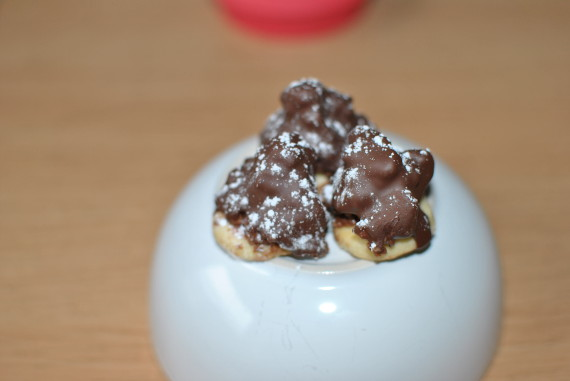

Schweizer Schokoberge

- Zubereitung: ca. 2 Stunden (ohne Wartezeit)
- Für ca. 45 Stück
Zutaten
- 125 g Mehl
- 1 Eigelb (Größe M)
- 60 g Zucker
- 1 Pck. Vanilin-Zucker
- 70 g Butter
- 200 g Toblerone
- 200 g Zartbitter-Kuvertüre
- 200 g Vollmilch-Kuvertüre
- 250 g gehackte Mandeln
- 3 EL Rote-Johannisbeeren-Gelee
- 2 EL Puderzucker
- Mehl für die Arbeitsfläche
- Frischhaltefolie, Backpapier
Zubereitung
- Mehl, Eigelb, 30 g Zucker, Vanilin-Zucker und Butter in Flocken zügig zu einem glatten Teig verarbeiten. In Folie gewickelt ca. 30 Minuten kalt stellen.
- Mürbeteig auf bemehlter Arbeitsfläche ausrollen und ca. 40 Kreise (Durchmesser ca. 3 cm) ausstechen. Kreise auf zwei mit Backpapier ausgelegte Bleche setzen. Nacheinander im vorgeheizten Backofen bei 175° Celsius (Umluft: 150° Celsius) 12
bis 15 Minuten backen. Plätzchen herausnehmen und auf einem Gitter auskühlen lassen.
- Schokolade, 50 g Zartbitter-Kuvertüre und 50 g Vollmilch-Kuvertüre hacken, über einem warmen Wasserbad schmelzen. Etwas abkühlen lassen. Mandeln und 30 g Zucker in einer Pfanne karamellisieren. Herausnehmen, abkühlen lassen und grob hacken.
Mandeln unter die Schokomasse heben. Masse abkühlen lassen, bis sie wieder etwas fester geworden ist.
- Johannisbeer-Gelee erwärmen. Plätzchen damit bestreichen. Auf jedes Plätzchen mit einem Teelöffel etwas Schokomasse geben, kalt stellen. Je 150 g Zartbitter-Kuvertüre und Vollmilch-Kuvertüre zusammen schmelzen, Schokoberge damit überziehen.
Trocknen lassen. Mit Puderzucker bestäuben.